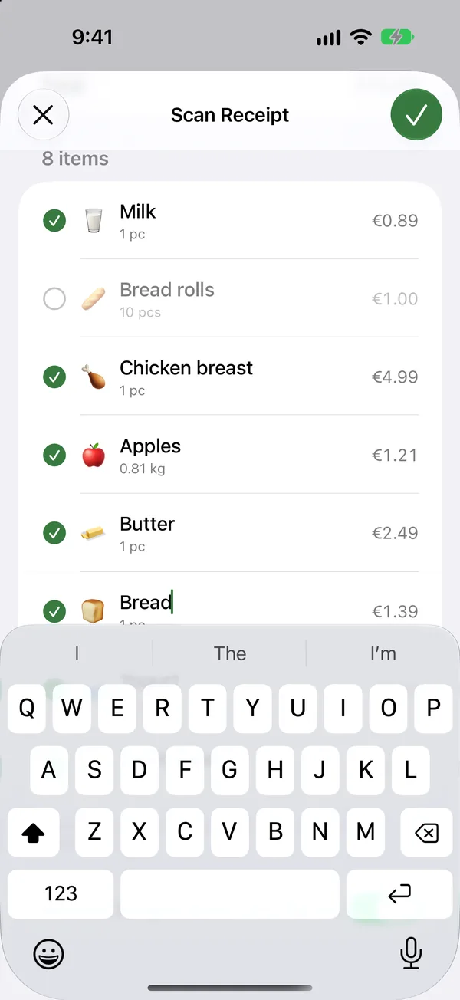

What to do when the receipt scan misses something
-
Step 1 Fix a name
Tap an item’s name and edit it, for example turning a receipt abbreviation into Bread.

-
Step 2 Leave it out or change the category
The green circle next to an item (Include in purchase) leaves it out. Tap the emoji to change the category, or swipe left to delete it.
-
Step 3 When nothing is found
If you see No products found, tap Try Again with the whole receipt in good light. Add any missing items to your list by hand.
Frequently asked questions
Can I change the price or quantity on the results?
Not in the current version – you can change the name and category, or leave an item out or delete it.
Why can’t Shoppie read a faded receipt?
Thermal paper fades over time. Scan receipts soon after shopping.
The scan won’t start – what now?
Allow camera access in iPhone Settings → Shoppie → Camera.
More questions are answered on the Support page.